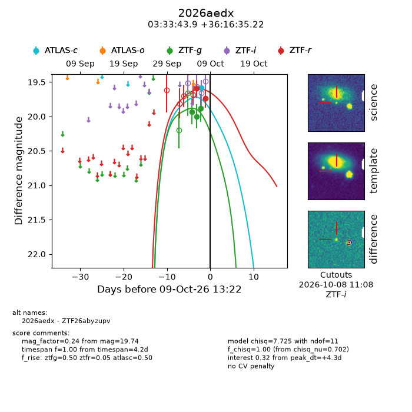
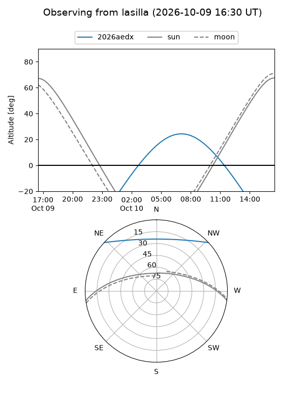
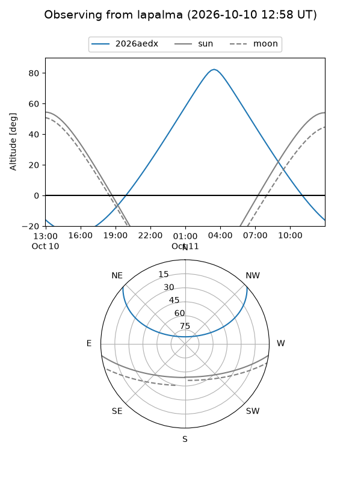
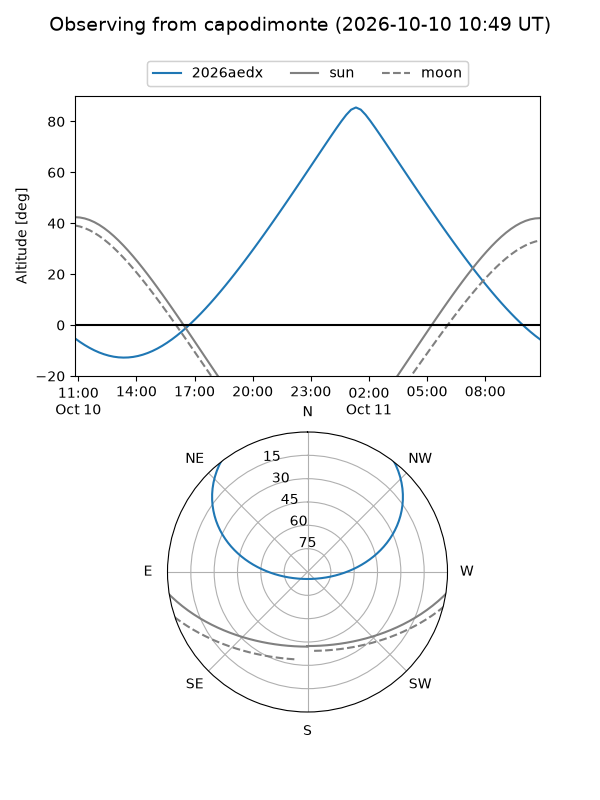
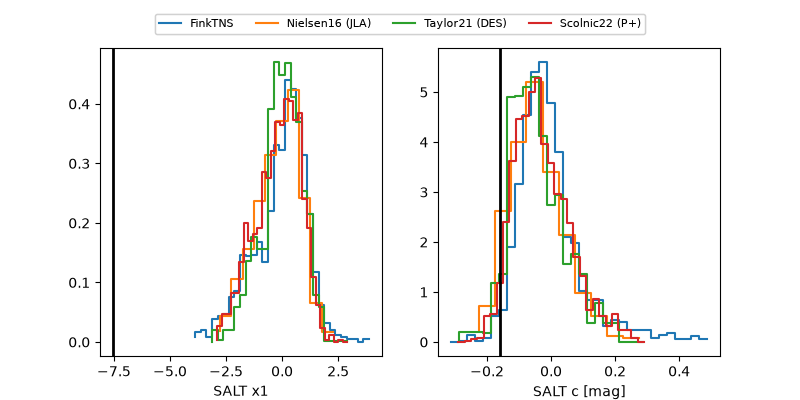

2026aedx
Target 2026aedx at 2026-10-09 13:25
Aliases and brokers:
FINK-ZTF: ztf.fink-portal.org/ZTF26abyzupv
Lasair-ZTF: lasair-ztf.lsst.ac.uk/objects/ZTF26abyzupv
ALeRCE-ZTF: alerce.online/object/ZTF26abyzupv
YSE-PZ: ziggy.ucolick.org/yse/transient_detail/2026aedx
TNS name: wis-tns.org/object/2026aedx
Direct TNS query: direct search
alt names
ZTF26abyzupv (ztf,fink_ztf)
2026aedx (tns,yse)
Coordinates:
equatorial (ra, dec) = 53.4329,+36.27645
equatorial (HMS+DMS) = 03:33:43.89,+36:16:35.22
galactic (l, b) = (155.9845,-15.97297)
Flags:
peak dt: +4.3
Photometry:
last atlasc=19.59, ztfg=19.88, ztfr=19.74
1 atlasc, 3 ztfg, 2 ztfr detections
Lightcurve

Visibility



Additional plots
